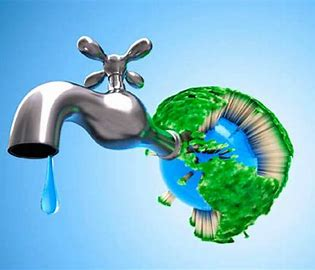

Consejos para Cuidar el Agua
- Repara las fugas en tu hogar para evitar el desperdicio de agua.
- Cierra el grifo mientras te cepillas los dientes o lavas los platos.
- Utiliza sistemas de riego eficientes para ahorrar agua en el jardín.
- Reutiliza el agua de lluvia para actividades como limpiar o regar plantas.
- Involúcrate en campañas de limpieza de ríos y playas.
Impacto de Nuestras Acciones
Cada gota cuenta. Pequeñas acciones diarias pueden hacer una gran diferencia en la preservación del agua dulce para las futuras generaciones.
Material Recomendado
Consulta estas páginas para más información: